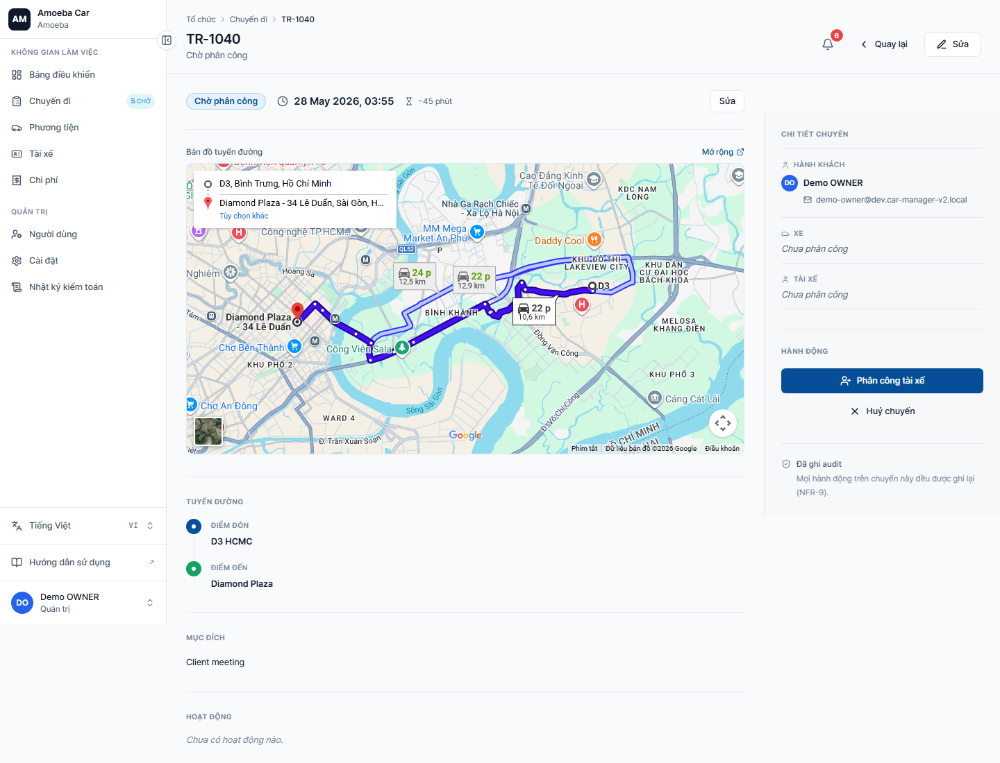
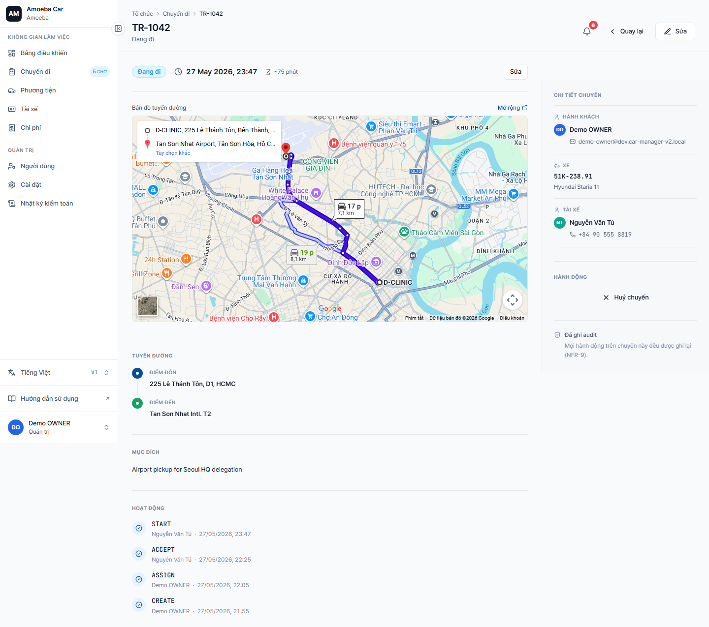

Quản lý chuyến đi (Trips)
- URL
/trips·/trips/new·/trips/[id]- Đặc quyền Admin
- Gán driver/vehicle cho chuyến chờ phân công · Re-assign nếu tài xế từ chối · Hủy bất kỳ chuyến nào
Tạo chuyến mới
Giống Manager — xem chi tiết ở Đặt xe (Quản lý). Form bắt buộc: điểm đón, điểm đến, thời gian khởi hành.
Khác với Manager: Admin có thể chọn bất kỳ user nào làm hành khách, không bị giới hạn vào chính mình.
Gán tài xế + xe cho chuyến PENDING_ASSIGNMENT

Mở chuyến ở trạng thái "Chờ phân công" (PENDING_ASSIGNMENT).
Trong khu vực "Quick Actions" ở đầu trang, chọn:
- Tài xế — dropdown danh sách tài xế đang AVAILABLE
- Xe — dropdown xe AVAILABLE
Bấm "Gán". Chuyến chuyển sang PENDING_DRIVER_CONFIRMATION — tài xế nhận thông báo và phải xác nhận.
Theo dõi chuyến đang chạy

Trang chi tiết IN_PROGRESS hiển thị:
- Bản đồ tuyến đường
- Hành khách + tài xế + xe
- Activity feed bên dưới — ai đã CREATE, ASSIGN, ACCEPT, START, kèm timestamp
- Audit link sang trang audit log đầy đủ
Hủy chuyến
- Admin hủy được chuyến ở mọi trạng thái chưa hoàn tất (không hủy được COMPLETED/CANCELLED/REJECTED)
- Bấm nút "Hủy chuyến" (đỏ) ở dưới cùng → nhập lý do (bắt buộc) → xác nhận
- Tài xế + hành khách nhận thông báo
Re-assign khi tài xế từ chối
Khi tài xế bấm "Từ chối" với lý do, chuyến chuyển sang REJECTED_BY_DRIVER. Admin vào lại chuyến → bấm "Gán lại" → chọn tài xế khác. Chuyến quay về PENDING_DRIVER_CONFIRMATION.
Soft-warning xung đột lịch
Khi gán tài xế hoặc xe trùng với chuyến khác đang ACTIVE, hệ thống cảnh báo nhưng không chặn — Admin có quyền save bất chấp xung đột. Action được ghi audit log TRIP.CONFLICT_OVERRIDDEN.